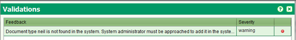

Bulk Load Scanned Documents
This functions allows the loading of existing scanned documents
(for instance sporadic registration documents) into the SOLA digital archive
and hence provide easy access to these documents by the systematic registration team.
Load Scanned Document Collections
This step should ideally occur at the start-up stage of systematic registration.
Scanned document images will need to be loaded onto the workstation to do the uploading
or a network folder accessible by the SOLA user. Each collection should be in a folder that
corresponds to a document type (source.administrative_source_type table in SOLA database)

Steps
In this part of the screen, the destination type is defined. At the moment, there are two:
- Run the SOLA Bulk Operations software
- From the Dashboard select the Load Scanned Documents tool to open the Load Scanned Documents
screen
- Identify the folder in which there are a series of subfolders containing a particular collection for
a document type (eg a subfolder named “mortgage” for scanned images of mortgages. Another sub-folder
named “lease” etc ). You should select the head folder containing the sub-folders and Files of Type
drop-down should remain expression as Directories Only
- Click on Load and message Information Source are loaded with success. The files of type drop down
should retain the Directories Only as the value for the Files of Type. Sub-folder name must
coincide with a document type as recorded in the source.administrative_source_type table in the
SOLA database. Scanned image files must be .pdf, .tif, .tiff or jpg. If any of these conditions
are not met a message will be displayed and you will be directed to the Validation Screen
(by clicking on the Validation button) for details on the where those conditions are not met

- Other object
This is selected if you want to upload other kinds of objects like road, control points, villages, etc.
Further, input the type of the object and which field in the source will be used for the label.
Also See